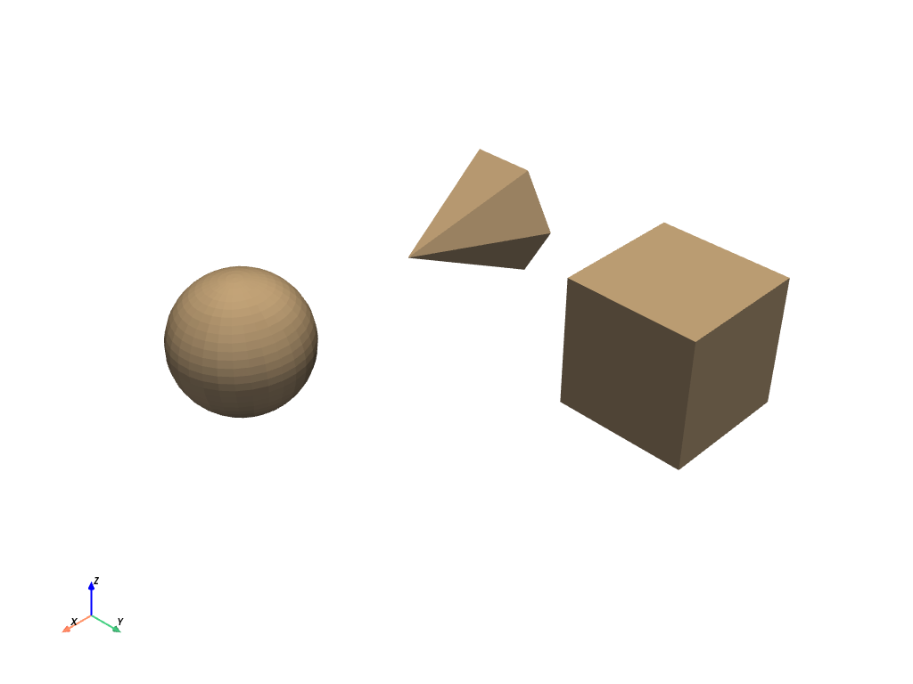
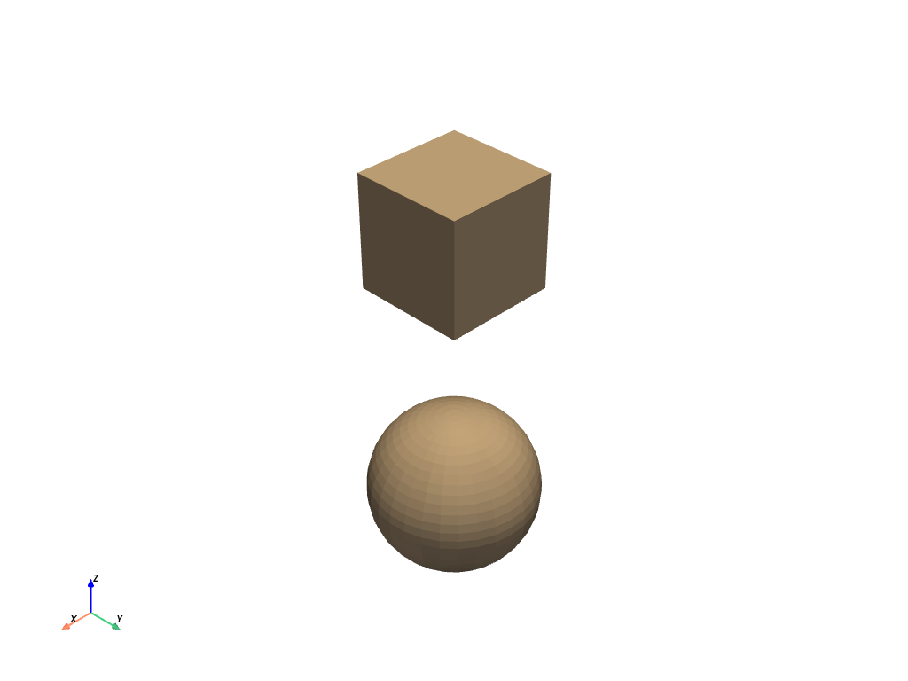

pyvista.MultiBlock#
- class MultiBlock(*args, **kwargs)[source]#
A composite class to hold many data sets which can be iterated over.
This wraps/extends the
vtkMultiBlockDataSetclass in VTK so that we can easily plot these data sets and use the composite in a Pythonic manner.You can think of
MultiBlocklike lists or dictionaries as we can iterate over this data structure by index and we can also access blocks by their string name.Examples
>>> import pyvista as pv
Create empty composite dataset
>>> blocks = pv.MultiBlock()
Add a dataset to the collection.
>>> sphere = pv.Sphere() >>> blocks.append(sphere)
Add a named block.
>>> blocks["cube"] = pv.Cube()
Instantiate from a list of objects.
>>> data = [pv.Sphere(center=(2, 0, 0)), pv.Cube(center=(0, 2, 0)), ... pv.Cone()] >>> blocks = pv.MultiBlock(data) >>> blocks.plot()
 Instantiate from a dictionary.
>>> data = {"cube": pv.Cube(), "sphere": pv.Sphere(center=(2, 2, 0))} >>> blocks = pv.MultiBlock(data) >>> blocks.plot()
 Iterate over the collection
>>> for name in blocks.keys(): ... block = blocks[name]
>>> for block in blocks: ... surf = block.extract_surface() # Do something with each dataset
Methods
MultiBlock.add_field_array(scalars, name[, deep])Add field data.
MultiBlock.add_field_data(array, name[, deep])Add field data.
MultiBlock.append(dataset)Add a data set to the next block index.
MultiBlock.cell_centers([vertex, progress_bar])Generate points at the center of the cells in this dataset.
Transform cell data into point data.
MultiBlock.clean([empty])Remove any null blocks in place.
Remove all field data.
Remove all field data.
MultiBlock.clip([normal, origin, invert, ...])Clip a dataset by a plane by specifying the origin and normal.
MultiBlock.clip_box([bounds, invert, ...])Clip a dataset by a bounding box defined by the bounds.
MultiBlock.combine([merge_points, tolerance])Combine all blocks into a single unstructured grid.
MultiBlock.compute_cell_sizes([length, ...])Compute sizes for 1D (length), 2D (area) and 3D (volume) cells.
MultiBlock.copy([deep])Return a copy of the multiblock.
MultiBlock.copy_attributes(dataset)Copy the data attributes of the input dataset object.
MultiBlock.copy_meta_from(ido, deep)Copy pyvista meta data onto this object from another object.
MultiBlock.copy_structure(dataset)Copy the structure (geometry and topology) of the input dataset object.
MultiBlock.deep_copy(to_copy)Overwrite this data object with another data object as a deep copy.
MultiBlock.elevation([low_point, ...])Generate scalar values on a dataset.
MultiBlock.extract_all_edges([progress_bar])Extract all the internal/external edges of the dataset as PolyData.
Extract the surface the geometry of all blocks.
MultiBlock.get(index)Get a block by its index or name.
MultiBlock.get_block_name(index)Return the string name of the block at the given index.
Get the min/max of an array given its name across all blocks.
Find the index number by block name.
MultiBlock.head([display, html])Return the header stats of this dataset.
Get all the block names in the dataset.
Get the next block from the iterator.
MultiBlock.outline([generate_faces, nested, ...])Produce an outline of the full extent for the all blocks in this composite dataset.
MultiBlock.outline_corners([factor, nested, ...])Produce an outline of the corners for the all blocks in this composite dataset.
This method can be used to override a VTK class with a Python subclass.
MultiBlock.plot([off_screen, full_screen, ...])Plot a PyVista, numpy, or vtk object.
Transform point data into cell data.
MultiBlock.pop(index)Pop off a block at the specified index.
MultiBlock.save(filename[, binary, texture])Save this vtk object to file.
MultiBlock.set_block_name(index, name)Set a block's string name at the specified index.
MultiBlock.shallow_copy(to_copy)Shallow copy the given mesh to this mesh.
MultiBlock.slice([normal, origin, ...])Slice a dataset by a plane at the specified origin and normal vector orientation.
MultiBlock.slice_along_axis([n, axis, ...])Create many slices of the input dataset along a specified axis.
MultiBlock.slice_along_line(line[, ...])Slice a dataset using a polyline/spline as the path.
MultiBlock.slice_orthogonal([x, y, z, ...])Create three orthogonal slices through the dataset on the three cartesian planes.
MultiBlock.triangulate([inplace, progress_bar])Return an all triangle mesh.
Ensure that all nested data structures are wrapped as PyVista datasets.
Attributes
Return the actual size of the dataset object.
Find min/max for bounds across blocks.
Return the center of the bounding box.
Return vtkFieldData as DataSetAttributes.
Return FieldData as DataSetAttributes.
Return the length of the diagonal of the bounding box.
Get address of the underlying VTK C++ object.
Return the total number of blocks set.
Return the total volume of all meshes in this dataset.